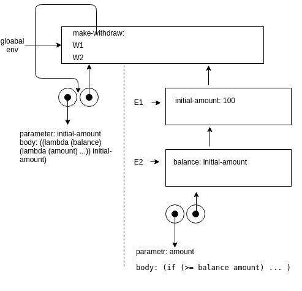
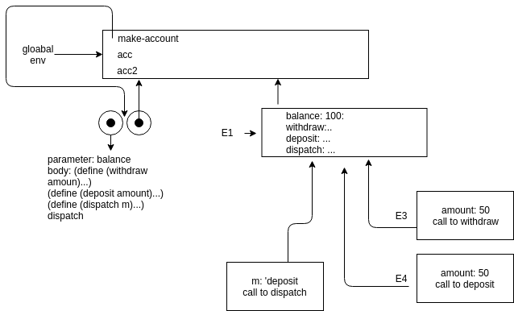

SICP 3.2 Модель вычислений с окружениями
Упражнение 3.9
Покажите структуру окружений для вычисления факториала.
(define (factorial n)
(if (= n 1)
1
(* n (factorial (- n 1)))))
(factorial 6)
определение процедуры в глобальной области. создается окружение где n=6, оно ссылается на глобальную область.
(* 6 (factorial 5))
E1(n=6) E2(n=5) E3(n=4) E4(n=3) E5(n=2) E6(n=1), все ссылаются на глобальную область видимости.
(define (factorial n)
(fact-iter 1 1 n))
(define (fact-iter product counter max-count)
(if (> counter max-count)
product
(fact-iter (* counter product)
(+ counter 1)
max-count)))
E1 - n: 6 -> G (fact-iter 1 1 6)
E2 - product: 1 -> G
- counter: 1
- max-count: 6
(fact-iter 1 2 6)
E3 - product 1 -> G
- counter 2
- max-count 6
(fact-iter 1 2 6) …
Упражнение 3.10
Проиллюстрируйте структуры окружений для следующей процедуры и вызовов.
(define (make-withdraw initial-amount)
(let ((balance initial-amount))
(lambda (amount)
(if (>= balance amount)
(begin (set! balance (- balance amount))
balance)
"Insufficient funds"))))
(define W1 (make-withdraw 100))
(W1 50)
(define W2 (make-withdraw 100))
учтите что let это синтаксический сахар над lambda, то есть следующие записи эквивалентны
(let ((<var> <exp>)) <body>)
((lambda (<var>) <body>) <exp>)
(define (make-withdraw initial-amount)
((lambda (balance) (lambda (amount) ...)) initial-amount))

(W1 50)
Set! повлияет на E2, initial-mount останется неизменным в первом окружении.
Упражнение 3.11
Проиллюстрируйте структуру окружений для следующей процедуры и вызовов
(define (make-account balance)
(define (withdraw amount)
(if (>= balance amount)
(begin (set! balance (- balance amount))
balance)
"Insufficient funds"))
(define (deposit amount)
(set! balance (+ balance amount))
balance)
(define (dispatch m)
(cond ((eq? m 'withdraw) withdraw)
((eq? m 'deposit) deposit)
(else (error "Unknown request -- MAKE-ACCOUNT"
m))))
dispatch)
(define acc (make-account 50))
((acc 'deposit) 40)
((acc 'withdraw) 60)

Где хранится внутреннее состояние acc? Состояние хранится в окружении E1.
Предположим, что мы определяем еще один счет.
(define acc2 (make-account 100))
Каким образом удается не смешивать внутренние состояния двух счетов? На каждый счет создаются отдельные окружения, никак не пересекающиеся.
Какие части структуры окружений общие у acc и acc2? Только глобальная область видимости, то есть определение make-account.